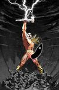
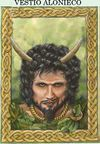
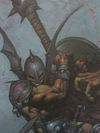
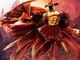

De: La Frikipedia, la enciclopedia extremadamente seria.
De: La Frikipedia, la enciclopedia extremadamente seria. De: La Frikipedia, la enciclopedia extremadamente seria.
| De la serie tribus urbanas del mundo: | |||
| Castreño | |||
| |||
| Hábitat | Galicia, Portugal, País Llionés, Asturies | ||
|---|---|---|---|
| Inteligencia | Suficiente para robarte todo tu money y correr a esconderse detrás de las murallas de su pueblo | ||
| Frase favorita | ¿Me das plata pa' comer algo? (Sí, claro...) | ||
| ¿Peligroso? | Si, muxísisisisimo | ||
| Obsesión | Los porros, vacas, ovejas, oro, plata, estaño, productos de lujo importados... | ||
| Notas | Nunca te metas dentro de un castro, luego tendrás castritis | ||
Llámase castreño al habitante de las urbanizaciones forestales conocidas como castros. Eran señores con barbas recortaditas, grandes collares de oro, espada al cinto, puñal al cinto, lanza al cinto e incluso falda al cinto. De sus mujeres no se sabe nada porque no se preocupaban de ellas, de hecho se cree que los castreños se reproducían como los cucos, violinando mujeres a los Iberos y después secuestrarles los hijos tenidos en la coyunda.
Todo buen macho castreño debe ir con las siguientes prendas: camisa y faldita. Aunque el auténtico macho castreño sea el macho castreño celta galaico (más conocido como castrexo) que iba en pelotas y armas.
Se conoce que los castreños eran unos vagos y maleantes que andaban jodiendo la marrana a los diversos imperios que poblaron España-Portugal (Imperio Romano, Imperio Napoleónico, Imperio Zarista, Imperio Franquista, Imperio Aznarista, Imperio Salazarista, I y II Reich Galaico), pero sólo Franco pudo sodomizarlos creando una legislación específica para ellos, la ley de vagos y maleantes. Aún así hoy en día siguen dando la lata al Madrid castizo e incluso tienen un equipo de fúrbol (el Celta de Vigo) conocido por sus bacanales nocturnas.
Su prestigio no tiene límites entre los diversos reinos de taifas ibéricos y todo el norte español quiere un machote castreño entre sus antepasados.
Cada vez que un castrexo tenga ganas de liarla parda, sal de su camino amigho. Suelen emborracharse con cerveza y salir de su castro en dirección al monte tras su dios Bandua, o su profeta, e irse a Castilla a saquear y violar hembras ibéricas (a las cuales les secuestran sus hijos cuando yastán criados).
Otra costumbre castreña es la de no tener esclavos, se los comen con patatas y pimentón, y luego se limpian los dientes con orines. Se sabe que intentaron crear un partido político pero no lo consiguieron debido a diferencias internas entre sus diversos "Populi" (que es como les llaman a los pre-partidos políticos), así que viven en feliz anarquía, desfase y despiporre en sus castros que se extienden desde Galicia, Portugal, León, Asturies, Cantabria, Turquía, Rusia e incluso han penetrado en Euskadi (aunque esto sea negado por el PNV).
La religión castrexa, es una de las más sencillas de toda la historia de la humanidad. El principio de los tiempos, según los castrexos, ocurrió cuando el dios Lugh, se corrió encima de un río y comenzó a surgir el planeta Tierra y los demás dioses y personas. Aquí tienen la lista de todos los dioses castreñoss:
| Imagen | Nombre | Atributos | Castigo |
|---|---|---|---|
|  | Reve Larouco (Larouco para todos y sin ninguna excepción) |
El dios de todos los dioses, un ser superior que para eso vive en lo alto de la montaña. | Doblégate a él si no quieres sufrir las consecuencias. Además, aunque huyas te hará tras tras por detrás o enviará un trueno a por ti. |
|  | Vestio Alonieco (Vestio para los esepapañoles) |
Es el dios cornudo. Gracias a él existen los divorcios, los abogados y los desgraciados. | Si no le adoras tu mujer "sufrirá" las consecuencias ¡¡¡Muahahaha!!! |
| Lugh (Lug pa los colejas) |
Es el dios de los manitas, artesanos, jipis y todo aquel que trabaje. | Si no adoras a la luz te quemará la retina. | |
|  | Coso (El Soldau de Fierru para todos) |
Es el dios más cabrón de todos, es decir, es el dios de la guerra, y el enemigo mortal de Lugh y del pueblo civilizado. | Si no eres satánico o heavy, ya puedes echar a correr, un grupo de satanistas va a por ti. |
| Coventina (Beatriz Manjón para los salidos) |
Es la esposa de todo aquel dios que ocupe la cúspide del poder. | Si no eres un salido, no podrás entrar en su | |
| Nantugaicis (Nati pa cuando sale a buscar gresca) |
Es la diosa que te puede proteger frente a los romanos, cartagineses, suevos, visigordos, cristianos, musulmanes.... | Si no le ofreces algo de ropa o flores hará que seas virgen hasta los 80. | |
|  | Bandua (Bandu para sus secretos amigos) |
Dios de los hechiceros, magos, brujas, estrategas, gafapastas y demás listillos que prefieren pensar antes de pelearse. Se lleva mal con Coso. | Si cuando eres joven y andas de farra con los amigos no te lo llevas de fiesta prepárate porque tu familia, novia y amigos te abandonarán, los yonkis se enamorarán de ti, los canis y gitanos creerán que les debes pasta.... |
Autor(es):